Africa Pack
Data wydania: 22 czerwca 2021
Cena pakietu: 35.99 zł
Oficjalny zwiastun DLC Africa Pack
Przeżyj niezapomnianą afrykańską przygodę w dodatku Planet Zoo: Pakiet Afryka! Zaadoptuj i otocz opieką pięć nowych gatunków zwierząt, w tym cztery zwierzęta z wybiegu i jedno z ekspozycji. Przekonaj się, czy sprostasz trudnemu scenariuszowi
z limitem czasu, którego akcja toczy się na malowniczym bazarze w sercu oazy, i zbuduj zoo swoich marzeń, korzystając z ponad 180 nowych elementów scenerii inspirowanych bogactwem różnorodnych motywów północnoafrykańskich. Afrykańska
przygoda czeka…
Galeria zdjęć
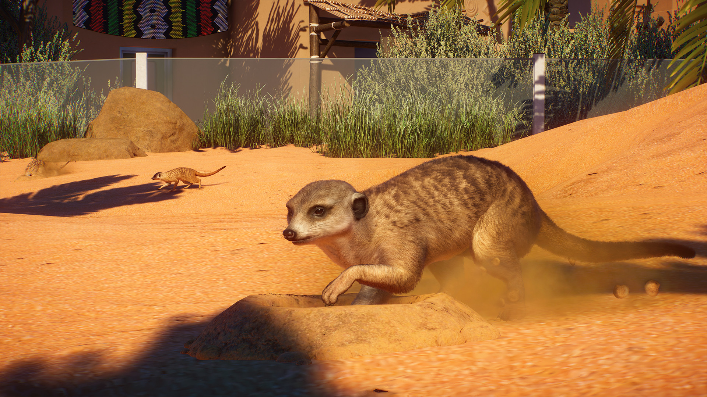
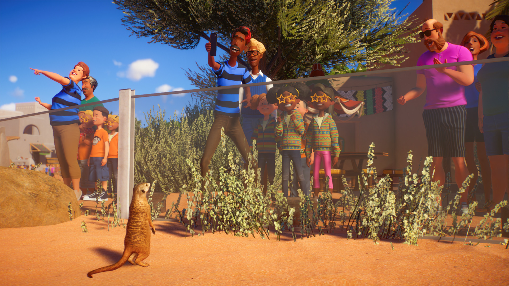
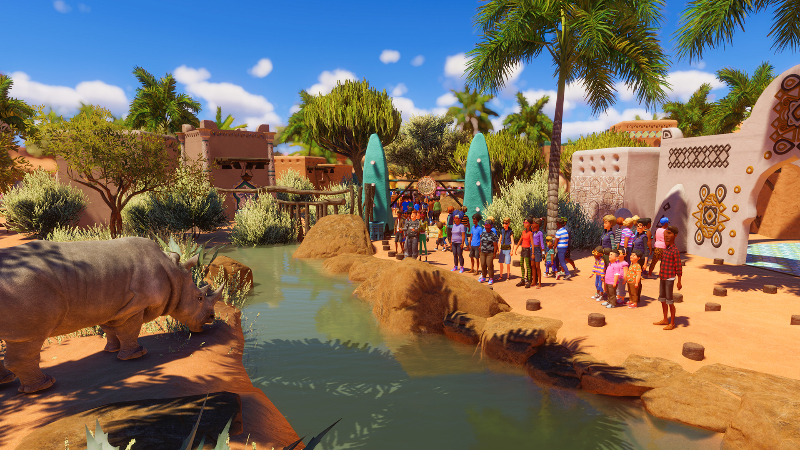
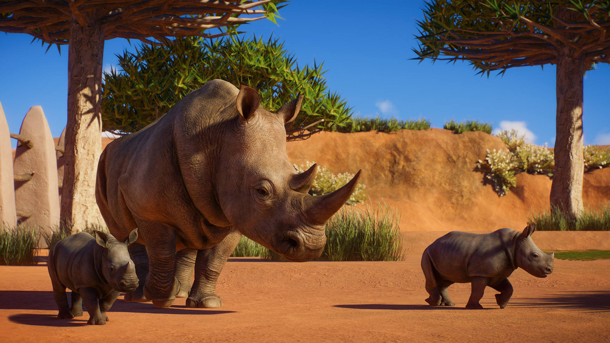
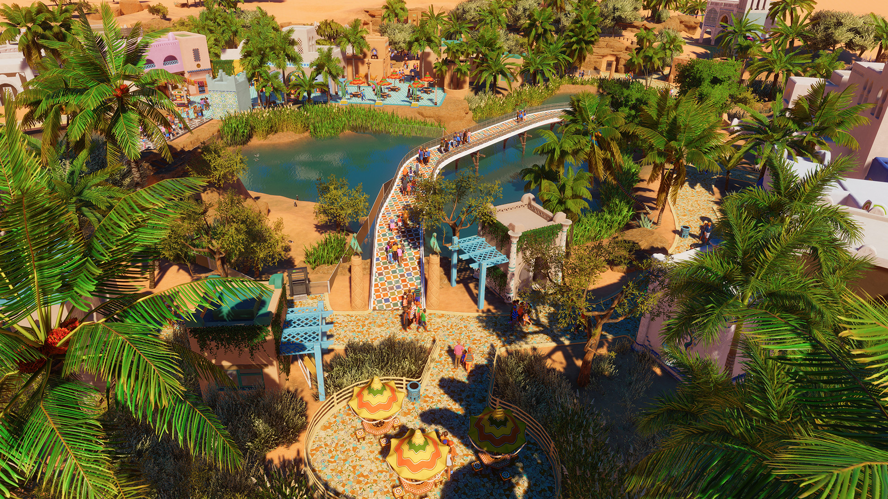
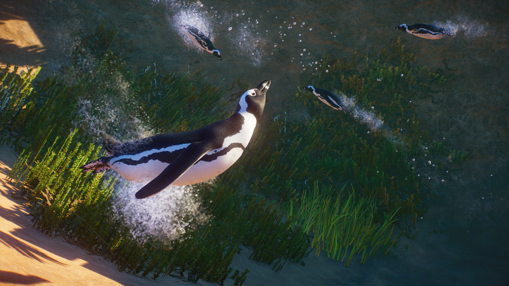
 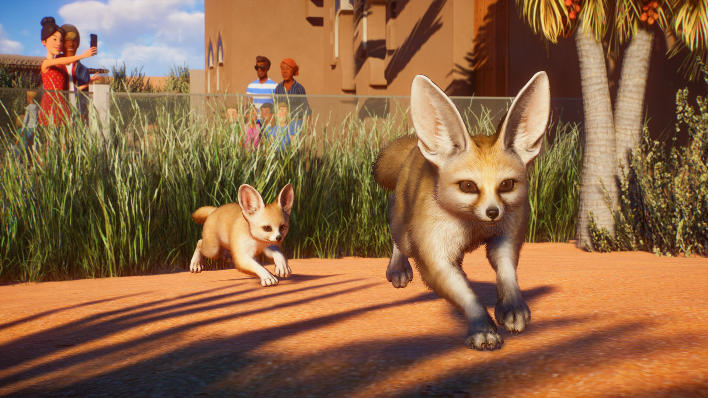
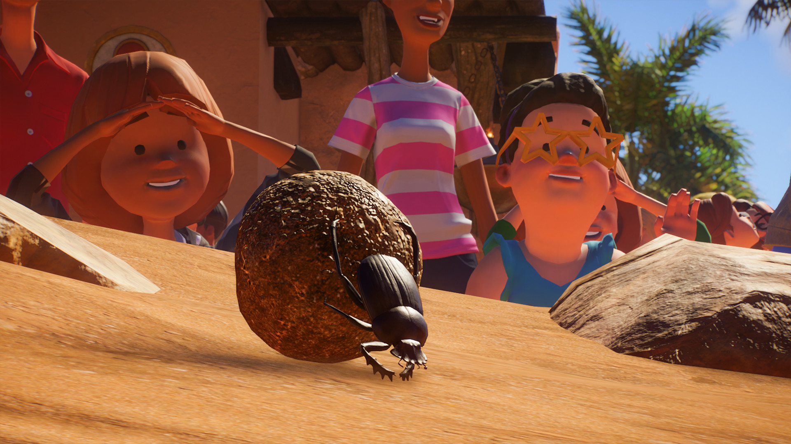
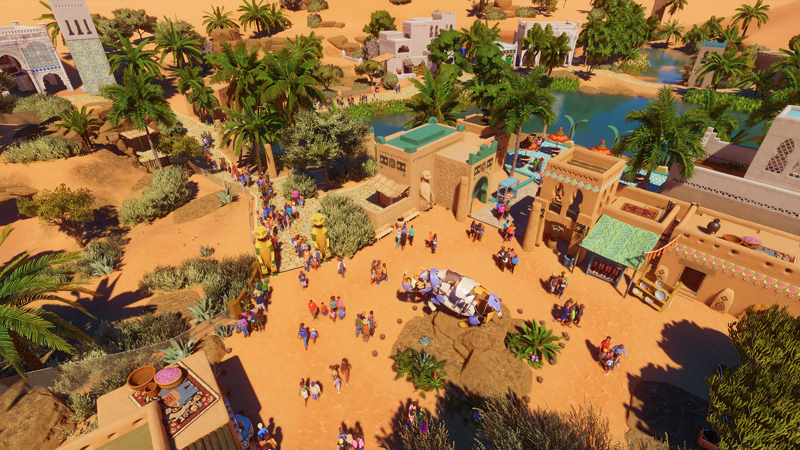
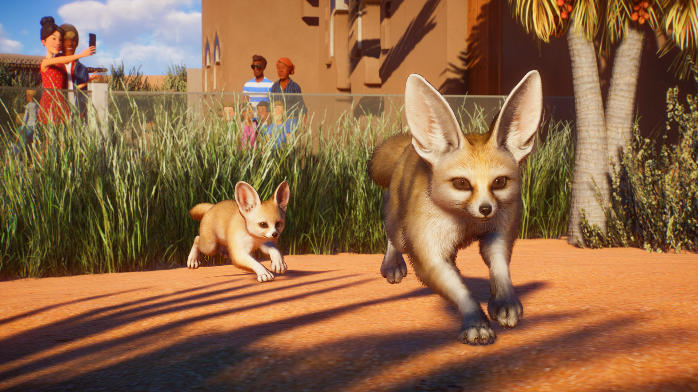
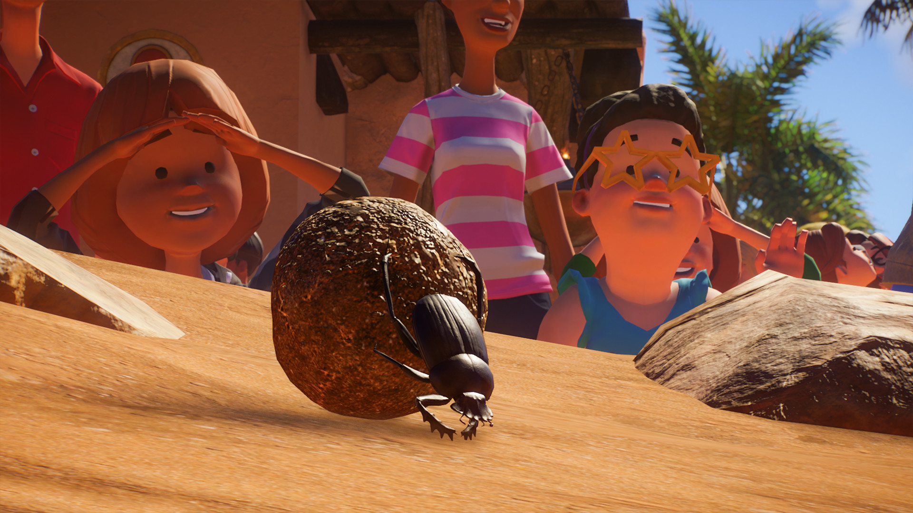
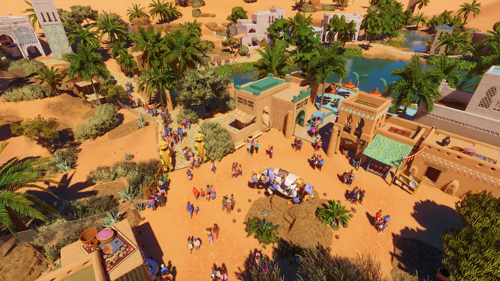
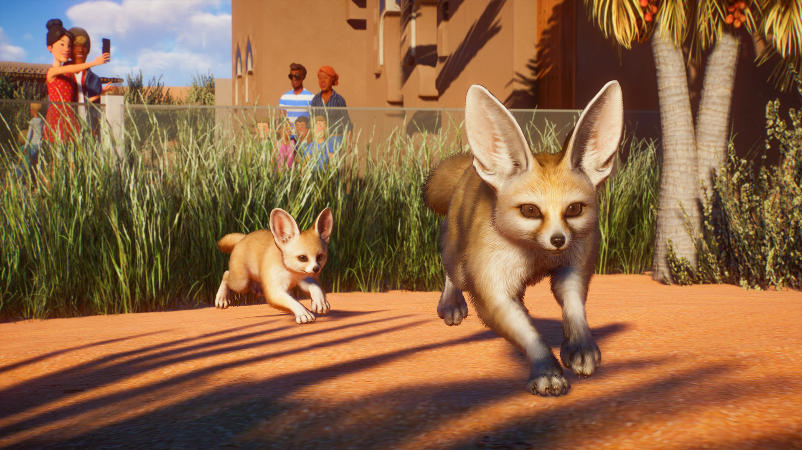
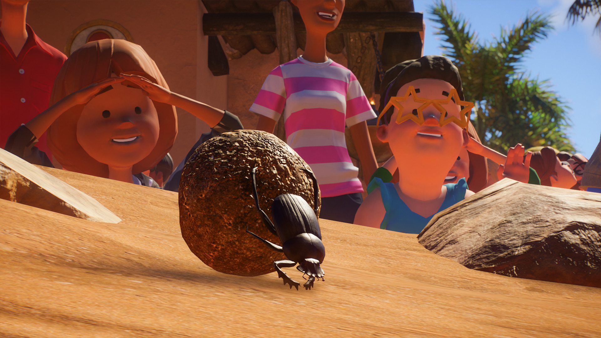
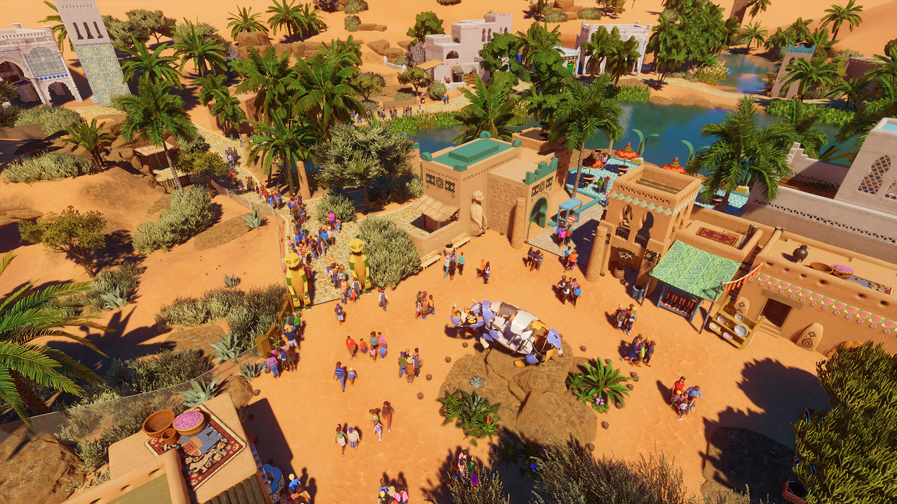
O tym DLC
Pięć zupełnie nowych gatunków zwierząt w Twoim zoo! Surykatka szara, nosorożec biały południowy, pingwin przylądkowy, fenek pustynny i poświętnik czczony. Zadbaj o idealne wybiegi dla swoich zwierząt, aby zapewnić im doskonałe warunki do życia. Obserwuj nowe, autentyczne zachowania tych niesamowitych stworzeń i daj swoim gościom możliwość zapoznania się z ich zwyczajami i informacjami o obszarach, z których pochodzą.
Zapewnij nowym mieszkańcom zoo urozmaicenia, dzięki którym nigdy nie będą się nudzić. Fenkom pustynnym nic nie sprawi takiej przyjemności, jak uganianie się za nową piłką tenisową. Te osobliwe i pełne energii zwierzęta z pewnością ożywią każde zoo!
Natomiast surykatki szare dosłownie rozkopią swój nowy dom. W środowisku naturalnym zwierzęta te wykorzystują swoje ostre pazury do kopania głębokich jam. Następnie znikają w nich, by pojawić się w zupełnie innym miejscu. Ten zestaw urozmaiceń zawiera wiele niespodzianek — pingwiny przylądkowe będą z przyjemnością bawić się nową kulą dyskotekową, a nosorożec biały południowy pokocha specjalnie przygotowany dla niego zraszacz.
Ponad 180 elementów scenerii
Wzbogać swoje zoo o liczne nowe elementy scenerii, takie jak żywa roślinność, przyciągające uwagę dekoracje i oryginalne ścieżki. Wznieś imponujące posągi zwierząt i stwórz malownicze krajobrazy, wzbogać otoczenie z użyciem kolorowych płytek oraz zapewnij gościom cień, sadząc wysokie, kołyszące się palmy.
Od glinianych, pokrytych strzechą chat w tętniących życiem wioskach po ustronne skaliste kaniony — dzięki dostępnym w Planet Zoo narzędziom możesz kształtować dowolne elementy krajobrazu. Ten pakiet ponad 180 tematycznych elementów scenerii ułatwi budowę wymarzonego zoo inspirowanego kulturą Afryki.
Ścieżka dźwiękowa
Oryginalna ścieżka dźwiękowa złożona z 4 wyjątkowych utworów. Możesz słuchać tej wspaniałej muzyki, kiedy tylko zechcesz.
Posłuchaj Africa Pack
Jedno nowe zoo w trybie Wyzwanie
Wczuj się w nastrój ustronnego bazaru w sercu oazy. Zmierzysz się tutaj z problemem ograniczonej przestrzeni, próbując przekształcić ukryty kwiat pustyni w cenioną atrakcję turystyczną. Masz robotę do wykonania! Gdy w zoo szwankują generatory elektryczności, trzeba zająć się problemami z klimatyzacją, zastanowić się nad odnawialnymi źródłami energii, takimi jak słońce i wiatr, oraz całkowicie zmodernizować tę lokalizację.
Stwórz zatem idylliczną oazę dla wszystkich zwierząt, które upodobały sobie to środowisko — także tych z podstawowej wersji Planet Zoo i innych pakietów.